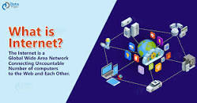
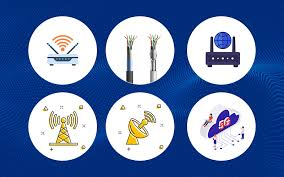

The Internet is a global network of billions of computers and other electronic devices. With the Internet, it's possible to access almost any information, communicate with anyone else in the world, and do much more. You can do all of this by connecting a computer to the Internet, which is also called going online.
Types of InternetTheThe Internet is the biggest world-wide communication network of computers. The Internet has a lot of smaller domestic, academic, business, and government networks, which together carry many different kinds of information.
The short form of internet is the 'Net'. The World Wide Web is one of its biggest services.
most common types of network devices include hubs, switches, routers, bridges, gateways, modems, repeaters, and access points.

